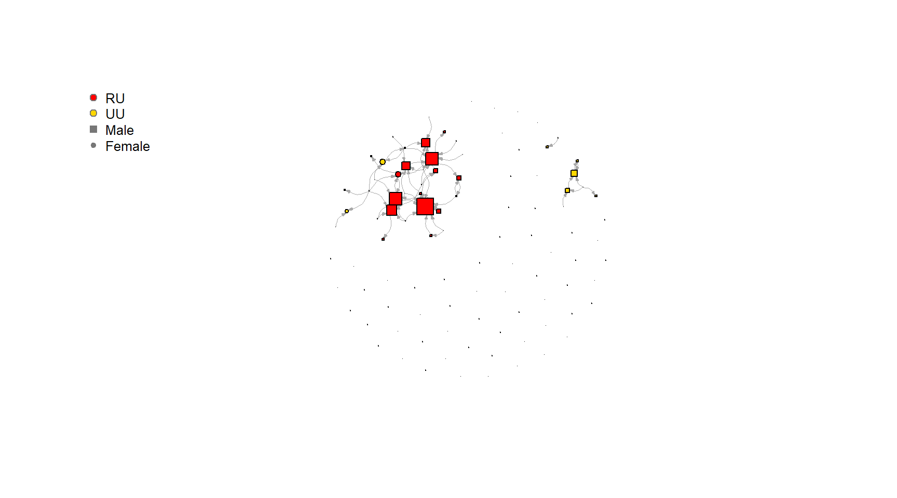
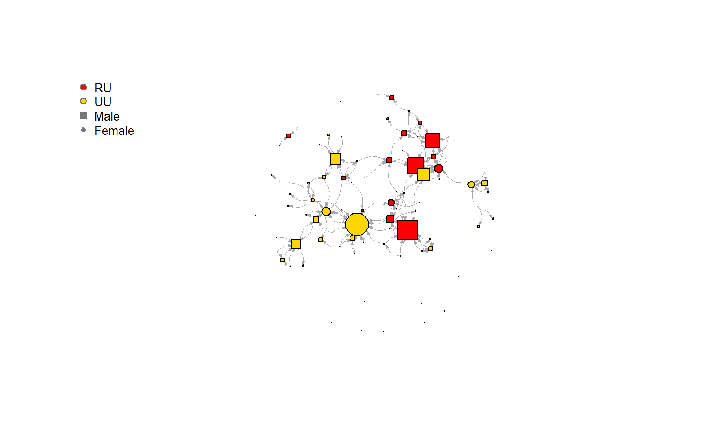

Network Descriptives
Niels Vullings
1 Load UDF
colorize <- function(x, color) {sprintf("<span style='color: %s;'>%s</span>", color, x) }
fpackage.check <- function(packages) {
lapply(packages, FUN = function(x) {
if (!require(x, character.only = TRUE)) {
install.packages(x, dependencies = TRUE)
library(x, character.only = TRUE)
}
})
}
fsave <- function(x, file = NULL, location = "./data/processed/") {
ifelse(!dir.exists("data"), dir.create("data"), FALSE)
ifelse(!dir.exists("data/processed"), dir.create("data/processed"), FALSE)
if (is.null(file))
file = deparse(substitute(x))
datename <- substr(gsub("[:-]", "", Sys.time()), 1, 8)
totalname <- paste(location, datename, file, ".rda", sep = "")
save(x, file = totalname) #need to fix if file is reloaded as input name, not as x.
}
fload <- function(filename) {
load(filename)
get(ls()[ls() != "filename"])
}
fshowdf <- function(x, ...) {
knitr::kable(x, digits = 2, "html", ...) %>%
kableExtra::kable_styling(bootstrap_options = c("striped", "hover")) %>%
kableExtra::scroll_box(width = "100%", height = "300px")
}1.1 Network Statistics functions
#---- Jaccard Index ----
fjac <- function(net1, net2) {
diag(net1) <- NA
diag(net2) <- NA
tj <- table(as.numeric(net1), as.numeric(net2))
jaccard <- tj[2,2] /(tj[1,2] + tj[2,1] + tj[2,2])
hamming <- tj[2,1] + tj[1,2]
return(jaccard)
}
#---- Hamming Distance ----
fham <- function(net1, net2) {
diag(net1) <- NA
diag(net2) <- NA
tj <- table(as.numeric(net1), as.numeric(net2))
hamming <- tj[2,1] + tj[1,2]
return(hamming)
}
#---- Density ----
fdens <- function(N, data = net, directed = TRUE) {
if (directed == TRUE) {
pos_tie <- (N * (N - 1))
} else {
pos_tie <- (N * (N - 1))/2
}
obs_tie <- sum(sna::dyad.census(data)[1:2])
dens <- obs_tie/pos_tie
return(dens)
}
#---- Moran's I ----
fMoran.I <- function(x, weight, scaled = FALSE, na.rm = FALSE, alternative = "two.sided", rowstandardize = TRUE) {
if (rowstandardize) {
if (dim(weight)[1] != dim(weight)[2])
stop("'weight' must be a square matrix")
n <- length(x)
if (dim(weight)[1] != n)
stop("'weight' must have as many rows as observations in 'x'")
ei <- -1/(n - 1)
nas <- is.na(x)
if (any(nas)) {
if (na.rm) {
x <- x[!nas]
n <- length(x)
weight <- weight[!nas, !nas]
} else {
warning("'x' has missing values: maybe you wanted to set na.rm = TRUE?")
return(list(observed = NA, expected = ei, sd = NA, p.value = NA))
}
}
ROWSUM <- rowSums(weight)
ROWSUM[ROWSUM == 0] <- 1
weight <- weight/ROWSUM
s <- sum(weight)
m <- mean(x)
y <- x - m
cv <- sum(weight * y %o% y)
v <- sum(y^2)
obs <- (n/s) * (cv/v)
if (scaled) {
i.max <- (n/s) * (sd(rowSums(weight) * y)/sqrt(v/(n - 1)))
obs <- obs/i.max
}
S1 <- 0.5 * sum((weight + t(weight))^2)
S2 <- sum((apply(weight, 1, sum) + apply(weight, 2, sum))^2)
s.sq <- s^2
k <- (sum(y^4)/n)/(v/n)^2
sdi <- sqrt((n * ((n^2 - 3 * n + 3) * S1 - n * S2 + 3 * s.sq) - k * (n * (n - 1) * S1 - 2 * n *
S2 + 6 * s.sq))/((n - 1) * (n - 2) * (n - 3) * s.sq) - 1/((n - 1)^2))
alternative <- match.arg(alternative, c("two.sided", "less", "greater"))
pv <- pnorm(obs, mean = ei, sd = sdi)
if (alternative == "two.sided")
pv <- if (obs <= ei)
2 * pv else 2 * (1 - pv)
if (alternative == "greater")
pv <- 1 - pv
list(observed = obs, expected = ei, sd = sdi, p.value = pv)
} else {
if (dim(weight)[1] != dim(weight)[2])
stop("'weight' must be a square matrix")
n <- length(x)
if (dim(weight)[1] != n)
stop("'weight' must have as many rows as observations in 'x'")
ei <- -1/(n - 1)
nas <- is.na(x)
if (any(nas)) {
if (na.rm) {
x <- x[!nas]
n <- length(x)
weight <- weight[!nas, !nas]
} else {
warning("'x' has missing values: maybe you wanted to set na.rm = TRUE?")
return(list(observed = NA, expected = ei, sd = NA, p.value = NA))
}
}
# ROWSUM <- rowSums(weight) ROWSUM[ROWSUM == 0] <- 1 weight <- weight/ROWSUM
s <- sum(weight)
m <- mean(x)
y <- x - m
cv <- sum(weight * y %o% y)
v <- sum(y^2)
obs <- (n/s) * (cv/v)
if (scaled) {
i.max <- (n/s) * (sd(rowSums(weight) * y)/sqrt(v/(n - 1)))
obs <- obs/i.max
}
S1 <- 0.5 * sum((weight + t(weight))^2)
S2 <- sum((apply(weight, 1, sum) + apply(weight, 2, sum))^2)
s.sq <- s^2
k <- (sum(y^4)/n)/(v/n)^2
sdi <- sqrt((n * ((n^2 - 3 * n + 3) * S1 - n * S2 + 3 * s.sq) - k * (n * (n - 1) * S1 - 2 * n *
S2 + 6 * s.sq))/((n - 1) * (n - 2) * (n - 3) * s.sq) - 1/((n - 1)^2))
alternative <- match.arg(alternative, c("two.sided", "less", "greater"))
pv <- pnorm(obs, mean = ei, sd = sdi)
if (alternative == "two.sided")
pv <- if (obs <= ei)
2 * pv else 2 * (1 - pv)
if (alternative == "greater")
pv <- 1 - pv
list(observed = obs, expected = ei, sd = sdi, p.value = pv)
}
}1.2 Custom Dyad & Triad census function
#---- Dyad census ----
ts_dyads_evo <- function (sims, net1, simtype = "notypespecified", forplot = TRUE) {
if (is.list(sims) == TRUE) {
nsims <- length(sims)
}
else {
nsims <- 1
}
df <- foreach::foreach(1:nsims, i = iterators::icount(),
.combine = "rbind") %dopar% {
if (is.list(sims) == TRUE) {
net2 <- sims[[i]]
}
else {
net2 <- sims
}
#find which values in the matrix are missing
N_NA <- unique(which(is.na(net1) | is.na(net2), arr.ind = TRUE)[,1]) # Identify normal NA values
S_NA <- as.data.frame(table(which(net1 == 10 | net2 == 10, arr.ind = TRUE)[,1])) # Identify Structural NAs
S_NA <- which(S_NA$Freq == nrow(net1))
NA_rows <- c(as.vector(N_NA), as.vector(S_NA)) # save all actors in 1 vector
if(length(NA_rows)> 0){
warning(ncol(net1)- length(NA_rows)," actors will be analysed due to missing values. Following ", length(NA_rows), " actors have been listwise deleted: ",paste(NA_rows, collapse=","))
# Delete both rows and columns of actors that are missing (NA)
net1 <- net1[-NA_rows,-NA_rows]
net2 <- net2[-NA_rows,-NA_rows]
}
diag(net1) <- NA
diag(net2) <- NA
flips <- net1 + t(net2) - net2
jumpst1 <- net1 + t(net1)
stablet1 <- jumpst1
jumpst1[lower.tri(jumpst1)] <- NA
jumpst2 <- net2 + t(net2)
stablet2 <- jumpst2
jumpst2[lower.tri(jumpst2)] <- NA
stable00 <- as.data.frame(which(jumpst1 == 0 & jumpst2 ==
0, arr.ind = TRUE))
stable01 <- as.data.frame(which(flips == 0 & stablet1 ==
1 & stablet2 == 1, arr.ind = TRUE))
stable11 <- as.data.frame(which(jumpst1 == 2 & jumpst2 ==
2, arr.ind = TRUE))
Null_Assym <- as.data.frame(which(jumpst1 == 0 & stablet2 ==
1, arr.ind = TRUE))
Assym_Null <- as.data.frame(which(flips == 0 & stablet1 ==
1 & stablet2 == 0, arr.ind = TRUE))
Assym_Mut <- as.data.frame(which(stablet1 == 1 & jumpst2 ==
2, arr.ind = TRUE))
Mut_Assym <- as.data.frame(which(jumpst1 == 2 & jumpst2 ==
1, arr.ind = TRUE))
flip <- as.data.frame(which(flips == 2 & stablet1 !=
2 & stablet2 != 2, arr.ind = TRUE))
jump02 <- as.data.frame(which(jumpst1 == 0 & jumpst2 ==
2, arr.ind = TRUE))
jump20 <- as.data.frame(which(jumpst1 == 2 & jumpst2 ==
0, arr.ind = TRUE))
table <- cbind(nrow(stable00), nrow(stable01), nrow(stable11),
nrow(Null_Assym), nrow(Assym_Null), nrow(Assym_Mut),
nrow(Mut_Assym), nrow(flip), nrow(jump02), nrow(jump20))
colnames(table) <- c("Null > Null", "Assym > Assym", "Mutual > Mutual",
"Null > Assym", "Assym > Null", "Assym > Mutual", "Mutual > Assym",
"Tie flip", "Null > Mutual", "Mutual > Null")
simnet <- NULL
return(data.frame(simnet = i, table))
}
df <- as.data.frame(df)
type <- NULL
df$type <- simtype
if (forplot == TRUE) {
df <- tidyr::pivot_longer(df, cols = !c(simnet, type),
names_to = "x", values_to = "y")
}
return(df)
}
#---- Triad census ----
ts_triads_evo <- function (sims, net1, simtype = "notypespecified", forplot = TRUE) {
x <- j <- k <- a1 <- a2 <- a3 <- tie_change <- Freq <- simnet <- type <- NULL
if (is.list(sims) == TRUE) {
nsims <- length(sims)
}
else {
nsims <- 1
}
df <- foreach::foreach(1:nsims, x = iterators::icount(),.combine = "rbind") %dopar% {
if (is.list(sims) == TRUE) {
net2 <- sims[[x]]
#find which values in the matrix are missing
N_NA <- unique(which(is.na(net1) | is.na(net2), arr.ind = TRUE)[,1]) # Identify normal NA values
S_NA <- as.data.frame(table(which(net1 == 10 | net2 == 10, arr.ind = TRUE)[,1])) # Identify Structural NAs
S_NA <- which(S_NA$Freq == nrow(net1))
NA_rows <- c(as.vector(N_NA), as.vector(S_NA)) # save all actors in 1 vector
if(length(NA_rows)> 0){
warning(ncol(net1)- length(NA_rows)," actors will be analysed due to missing values. Following ", length(NA_rows), " actors have been listwise deleted: ",paste(NA_rows, collapse=","))
# Delete both rows and columns of actors that are missing (NA)
net1 <- net1[-NA_rows,-NA_rows]
net2 <- net2[-NA_rows,-NA_rows]
}
}
else {
net2 <- sims
#find which values in the matrix are missing
NA_row <- unique(which(is.na(net1) | is.na(net2), arr.ind = TRUE)[,1])
#find which values in the matrix are missing
N_NA <- unique(which(is.na(net1) | is.na(net2), arr.ind = TRUE)[,1]) # Identify normal NA values
S_NA <- as.data.frame(table(which(net1 == 10 | net2 == 10, arr.ind = TRUE)[,1])) # Identify Structural NAs
S_NA <- which(S_NA$Freq == nrow(net1))
NA_rows <- c(as.vector(N_NA), as.vector(S_NA)) # save all actors in 1 vector
if(length(NA_rows)> 0){
warning(ncol(net1)- length(NA_rows)," actors will be analysed due to missing values. Following ", length(NA_rows), " actors have been listwise deleted: ",paste(NA_rows, collapse=","))
# Delete both rows and columns of actors that are missing (NA)
net1 <- net1[-NA_rows,-NA_rows]
net2 <- net2[-NA_rows,-NA_rows]
}
}
triads <- c("X003", "X012", "X102", "X021D", "X021U",
"X021C", "X111D", "X111U", "X030T", "X030C", "X201",
"X120D", "X120U", "X120C", "X210", "X300")
df <- foreach::foreach(a1 = 1:nrow(net1), i = iterators::icount(),.combine = "rbind") %:%
foreach::foreach(a2 = 1:nrow(net1), j = iterators::icount(), .combine = "rbind") %:%
foreach::foreach(a3 = 1:nrow(net1), k = iterators::icount(),.combine = "rbind") %do% {
if (i > j & j > k) {
data.frame(i = i, j = j, k = k,
t1_ij = as.character(net1[a1,a2]), t1_ji = as.character(net1[a2, a1]),
t1_ik = as.character(net1[a1,a3]), t1_ki = as.character(net1[a3, a1]),
t1_jk = as.character(net1[a2,a3]), t1_kj = as.character(net1[a3, a2]),
typeT1 = triads[which(sna::triad.census(net1[c(a1,a2, a3), c(a1, a2, a3)]) == 1)],
t2_ij = as.character(net2[a1, a2]), t2_ji = as.character(net2[a2, a1]),
t2_ik = as.character(net2[a1, a3]), t2_ki = as.character(net2[a3, a1]),
t2_jk = as.character(net2[a2, a3]), t2_kj = as.character(net2[a3, a2]),
typeT2 = triads[which(sna::triad.census(net2[c(a1, a2, a3), c(a1, a2, a3)]) == 1)],
tie_change = sum(c(net1[a1, a2], net1[a2, a1], net1[a1, a3], net1[a3, a1], net1[a2, a3], net1[a3, a2]) != c(net2[a1, a2], net2[a2, a1], net2[a1, a3], net2[a3, a1], net2[a2, a3], net2[a3, a2])))
}
}
df$name <- paste0(df$i, ".", df$j, ".", df$k)
df <- subset(df, select = c(tie_change))
#---- !!NEW!! Assign levels to counter missing columns ----
df$tie_change <- as.factor(df$tie_change)
levels(df$tie_change) <- c("0", "1","2", "3","4", "5","6")
#---- Fixes issues with simulated networks ----
df <- data.frame(simnet = x, table(df))
df <- tidyr::pivot_wider(df, names_from = tie_change,
values_from = Freq)
}
df <- as.data.frame(df)
df$type <- simtype
if (forplot == TRUE) {
df <- tidyr::pivot_longer(df, cols = !c(simnet, type),
names_to = "x", values_to = "y")
}
return(df)
}2 Load Packages
packages <- c("tidyverse", "sna", "igraph", "RsienaTwoStep", "ape", "iterators", "doParallel")
fpackage.check(packages)## Loading required package: tidyverse## Attaching packages tidyverse 1.3.2
## ggplot2 3.5.1 purrr 1.0.2
## tibble 3.2.1 dplyr 1.1.4
## tidyr 1.3.1 stringr 1.5.1
## readr 2.1.2 forcats 0.5.2
## Conflicts tidyverse_conflicts()
## purrr::%||%() masks base::%||%()
## dplyr::filter() masks stats::filter()
## dplyr::lag() masks stats::lag()
## Loading required package: sna
##
## Loading required package: statnet.common
##
##
## Attaching package: 'statnet.common'
##
##
## The following objects are masked from 'package:base':
##
## attr, order
##
##
## Loading required package: network
##
##
## 'network' 1.18.2 (2023-12-04), part of the Statnet Project
## * 'news(package="network")' for changes since last version
## * 'citation("network")' for citation information
## * 'https://statnet.org' for help, support, and other information
##
##
## sna: Tools for Social Network Analysis
## Version 2.7-2 created on 2023-12-05.
## copyright (c) 2005, Carter T. Butts, University of California-Irvine
## For citation information, type citation("sna").
## Type help(package="sna") to get started.
##
##
## Loading required package: igraph
##
##
## Attaching package: 'igraph'
##
##
## The following objects are masked from 'package:sna':
##
## betweenness, bonpow, closeness, components, degree, dyad.census, evcent, hierarchy,
## is.connected, neighborhood, triad.census
##
##
## The following objects are masked from 'package:network':
##
## %c%, %s%, add.edges, add.vertices, delete.edges, delete.vertices, get.edge.attribute,
## get.edges, get.vertex.attribute, is.bipartite, is.directed, list.edge.attributes,
## list.vertex.attributes, set.edge.attribute, set.vertex.attribute
##
##
## The following objects are masked from 'package:dplyr':
##
## as_data_frame, groups, union
##
##
## The following objects are masked from 'package:purrr':
##
## compose, simplify
##
##
## The following object is masked from 'package:tidyr':
##
## crossing
##
##
## The following object is masked from 'package:tibble':
##
## as_data_frame
##
##
## The following objects are masked from 'package:stats':
##
## decompose, spectrum
##
##
## The following object is masked from 'package:base':
##
## union
##
##
## Loading required package: RsienaTwoStep
##
## Loading required package: foreach
##
##
## Attaching package: 'foreach'
##
##
## The following objects are masked from 'package:purrr':
##
## accumulate, when
##
##
##
## Attaching package: 'RsienaTwoStep'
##
##
## The following objects are masked _by_ '.GlobalEnv':
##
## ts_dyads_evo, ts_triads_evo
##
##
## Loading required package: ape
##
##
## Attaching package: 'ape'
##
##
## The following objects are masked from 'package:igraph':
##
## degree, edges, mst, ring
##
##
## The following objects are masked from 'package:sna':
##
## consensus, degree
##
##
## The following object is masked from 'package:dplyr':
##
## where
##
##
## Loading required package: iterators
##
## Loading required package: doParallel
##
## Loading required package: parallel## [[1]]
## NULL
##
## [[2]]
## NULL
##
## [[3]]
## NULL
##
## [[4]]
## NULL
##
## [[5]]
## NULL
##
## [[6]]
## NULL
##
## [[7]]
## NULL3 Set up parallel cluster
no_cores <- detectCores() - 1
mycl <- makeCluster(rep("localhost", no_cores))
clusterEvalQ(mycl, library(RsienaTwoStep))## [[1]]
## [1] "RsienaTwoStep" "foreach" "stats" "graphics" "grDevices" "utils"
## [7] "datasets" "methods" "base"
##
## [[2]]
## [1] "RsienaTwoStep" "foreach" "stats" "graphics" "grDevices" "utils"
## [7] "datasets" "methods" "base"
##
## [[3]]
## [1] "RsienaTwoStep" "foreach" "stats" "graphics" "grDevices" "utils"
## [7] "datasets" "methods" "base"
##
## [[4]]
## [1] "RsienaTwoStep" "foreach" "stats" "graphics" "grDevices" "utils"
## [7] "datasets" "methods" "base"
##
## [[5]]
## [1] "RsienaTwoStep" "foreach" "stats" "graphics" "grDevices" "utils"
## [7] "datasets" "methods" "base"
##
## [[6]]
## [1] "RsienaTwoStep" "foreach" "stats" "graphics" "grDevices" "utils"
## [7] "datasets" "methods" "base"
##
## [[7]]
## [1] "RsienaTwoStep" "foreach" "stats" "graphics" "grDevices" "utils"
## [7] "datasets" "methods" "base"
##
## [[8]]
## [1] "RsienaTwoStep" "foreach" "stats" "graphics" "grDevices" "utils"
## [7] "datasets" "methods" "base"
##
## [[9]]
## [1] "RsienaTwoStep" "foreach" "stats" "graphics" "grDevices" "utils"
## [7] "datasets" "methods" "base"
##
## [[10]]
## [1] "RsienaTwoStep" "foreach" "stats" "graphics" "grDevices" "utils"
## [7] "datasets" "methods" "base"
##
## [[11]]
## [1] "RsienaTwoStep" "foreach" "stats" "graphics" "grDevices" "utils"
## [7] "datasets" "methods" "base"
##
## [[12]]
## [1] "RsienaTwoStep" "foreach" "stats" "graphics" "grDevices" "utils"
## [7] "datasets" "methods" "base"
##
## [[13]]
## [1] "RsienaTwoStep" "foreach" "stats" "graphics" "grDevices" "utils"
## [7] "datasets" "methods" "base"
##
## [[14]]
## [1] "RsienaTwoStep" "foreach" "stats" "graphics" "grDevices" "utils"
## [7] "datasets" "methods" "base"
##
## [[15]]
## [1] "RsienaTwoStep" "foreach" "stats" "graphics" "grDevices" "utils"
## [7] "datasets" "methods" "base"5 Networks
5.1 Make the graph object
#---- Wave 2 ----
graph_w1 <- igraph::graph_from_adjacency_matrix(
soc_data$nets[1,,], #now, I take the second wave
mode = c("directed"),
weighted = NULL,
diag = FALSE,
add.colnames = NULL
)
#---- Wave 2 ----
graph_w2 <- igraph::graph_from_adjacency_matrix(
soc_data$nets[2,,], #now, I take the second wave
mode = c("directed"),
weighted = NULL,
diag = FALSE,
add.colnames = NULL
)5.2 Network Visualisations
5.3 Wave 1
#---- Full network including Isolates ----
set.seed(2345)
l_w1 <- layout_with_mds(graph_w1)
plot(graph_w1, layout = l_w1,
vertex.color = ifelse(df_ego$Universiteit1.22 == "RU", "red", "gold"), #now, I can use actor attributes for plotting.
vertex.shape = ifelse(df_ego$plot_gen == "Male", "square", "circle"),
vertex.size = igraph::degree(graph_w1, mode = "all") * 1.5,
vertex.label = NA,
edge.width = .8,
edge.curved = 0.5,
edge.arrow.size =0.2,
main = "Gender Distribution of Two Sociology Departments 2022")
legend("topleft", c("Radboud", "Utrecht University", "Male", "Female"), pch = c(21,21,15,20), col = "#777777", pt.bg = c("red", "gold"), pt.cex = 1,
cex = 0.8, bty = "n", ncol = 1)
#---- Remove Isolates ----
diag(soc_data$nets[1,,]) <- 0
noisolates <- rowSums(soc_data$nets[1,,], na.rm = T) > 0
soc_w1_sel <- soc_data$nets[1,,][noisolates, noisolates]
graph_w1_sel <- graph_from_adjacency_matrix(soc_w1_sel, mode = "directed", weighted = NULL, diag = TRUE,
add.colnames = NA, add.rownames = NA)
ego_iso_w1 <- df_ego[noisolates,]
#---- Graph without Isolates ----
set.seed(2345)
l_w1 <- layout_with_mds(graph_w1_sel)
plot(graph_w1_sel, layout = l_w1,
vertex.color = ifelse(ego_iso_w1$Universiteit1.22 == "RU", "red", "gold"), #now, I can use actor attributes for plotting.
vertex.shape = ifelse(ego_iso_w1$plot_gen == "Male", "square", "circle"),
vertex.size = igraph::degree(graph_w1_sel, mode = "all") * 1.5,
vertex.label = NA,
edge.width = .8,
edge.curved = 0.5,
edge.arrow.size =0.2,
main = "Gender Distribution of Two Sociology Departments 2022")
legend("topleft", c("Radboud", "Utrecht University", "Male", "Female"), pch = c(21,21,15,20), col = "#777777", pt.bg = c("red", "gold"), pt.cex = 1,
cex = 0.8, bty = "n", ncol = 1)
5.4 Wave 2
#---- Full network including Isolates ----
set.seed(2345)
l_w2 <- layout_nicely(graph_w2)
plot(graph_w2, layout = l_w2,
vertex.color = ifelse(df_ego$Universiteit1.24 == "RU", "red", "gold"), #now, I can use actor attributes for plotting.
vertex.shape = ifelse(df_ego$plot_gen == "Male", "square", "circle"),
vertex.size = igraph::degree(graph_w2, mode = "all") * 1.5,
vertex.label = NA,
edge.width = 0.8,
edge.curved = 0.5,
edge.arrow.size =0.2,
main = "Gender Distribution of Two Sociology Departments 2022")
legend("topleft", c("Radboud", "Utrecht University", "Male", "Female"), pch = c(21,21,15,20), col = "#777777", pt.bg = c("red", "gold"), pt.cex = 1,
cex = 0.8, bty = "n", ncol = 1)#---- Remove Isolates ----
diag(soc_data$nets[2,,]) <- 0
noisolates <- rowSums(soc_data$nets[2,,], na.rm = T) > 0
soc_w2_sel <- soc_data$nets[2,,][noisolates, noisolates]
graph_w2_sel <- graph_from_adjacency_matrix(soc_w2_sel, mode = "directed", weighted = NULL, diag = TRUE,
add.colnames = NA, add.rownames = NA)
ego_iso_w2 <- df_ego[noisolates,]
#---- Graph without Isolates ----
set.seed(2345)
l_w2 <- layout_nicely(graph_w2_sel)
plot(graph_w2_sel, layout = l_w2,
vertex.color = ifelse(ego_iso_w2$Universiteit1.24 == "RU", "red", "gold"), #now, I can use actor attributes for plotting.
vertex.shape = ifelse(ego_iso_w2$plot_gen == "Male", "square", "circle"),
vertex.size = igraph::degree(graph_w2_sel, mode = "all") * 1.5,
vertex.label = NA,
edge.width = 0.8,
edge.curved = 0.5,
edge.arrow.size =0.2,
main = "Gender Distribution of Two Sociology Departments 2022")
legend("topleft", c("Radboud", "Utrecht University", "Male", "Female"), pch = c(21,21,15,20), col = "#777777", pt.bg = c("red", "gold"), pt.cex = 1,
cex = 0.8, bty = "n", ncol = 1)
5.5 Network Statistics
- I am working on making a nice table that adds all relevant
descriptive Network Statistics
- Jaccard
- Hamming
- Indegrees and outdegrees
- Morans I for Prestige ()
5.5.1 Calculate Network Statistics
#---- Extract networks ----
wave_1 <- soc_data$nets[1,,]
wave_2 <- soc_data$nets[2,,]
#---- Jaccard, Hamming & Density ----
jac <- fjac(wave_1, wave_2)
ham <- fham(wave_1, wave_2)
dens1 <- fdens(nrow(wave_1),wave_1)
dens2 <- fdens(nrow(wave_2),wave_2)
#---- Indegree distribution ----
hist(table(igraph::degree(graph_w1, mode = "in")), breaks = seq(from = 0, to = 100, by = 5),xlab='indegree', main= 'Histogram of indegree')
hist(table(igraph::degree(graph_w2, mode = "in")), breaks = seq(from = 0, to = 100, by = 5), xlab='indegree', main= 'Histogram of indegree')#---- Outdegree distribution ----
hist(table(igraph::degree(graph_w1, mode = "out")), breaks = seq(from = 0, to = 100, by = 1), xlab='outdegree', main= 'Histogram of outdegree')hist(table(igraph::degree(graph_w2, mode = "out")), breaks = seq(from = 0, to = 100, by = 1), xlab='outdegree', main= 'Histogram of outdegree')#---- Moran's I for Prestige ----
# Wave 1
geodistances <- geodist(wave_1, count.paths = TRUE)
geodistances <- geodistances$gdist
# first define a nb based on distance 1.
weights1 <- geodistances == 1
MI_pres_1 <- fMoran.I(df_ego$Q1.W1, scaled = FALSE, weight = weights1, na.rm = TRUE, rowstandardize = FALSE)
MI_pres_1## $observed
## [1] 0.2113287
##
## $expected
## [1] -0.01010101
##
## $sd
## [1] 0.1266338
##
## $p.value
## [1] 0.08036308# Wave 2
geodistances <- geodist(wave_2, count.paths = TRUE)
geodistances <- geodistances$gdist
# first define a nb based on distance 1.
weights1 <- geodistances == 1
MI_pres_2 <- fMoran.I(df_ego$Q1.W2, scaled = FALSE, weight = weights1, na.rm = TRUE, rowstandardize = FALSE)
MI_pres_2## $observed
## [1] 0.0636469
##
## $expected
## [1] -0.01010101
##
## $sd
## [1] 0.08979694
##
## $p.value
## [1] 0.4114901#---- Moran's I for gender ----
# Wave 1
geodistances <- geodist(wave_1, count.paths = TRUE)
geodistances <- geodistances$gdist
# first define a nb based on distance 1.
weights1 <- geodistances == 1
MI_gen_1 <- fMoran.I(df_ego$perc_female, scaled = FALSE, weight = weights1, na.rm = TRUE, rowstandardize = FALSE)
MI_gen_1## $observed
## [1] 0.2154872
##
## $expected
## [1] -0.01010101
##
## $sd
## [1] 0.133799
##
## $p.value
## [1] 0.09179144# Wave 2
geodistances <- geodist(wave_2, count.paths = TRUE)
geodistances <- geodistances$gdist
# first define a nb based on distance 1.
weights1 <- geodistances == 1
MI_gen_2 <- fMoran.I(df_ego$perc_female, scaled = FALSE, weight = weights1, na.rm = TRUE, rowstandardize = FALSE)
MI_gen_2## $observed
## [1] 0.1396191
##
## $expected
## [1] -0.01010101
##
## $sd
## [1] 0.09217327
##
## $p.value
## [1] 0.10430475.5.2 Create DF
df <- data.frame(Network_size_W1 = nrow(wave_1),
Jaccard_Index = round(jac, digits = 3),
Hamming_Distance = round(ham, digits = 3),
Density_w1 = round(dens1, digits = 3),
Density_w2 = round(dens2, digits = 3),
MoranI_pres_1 = round(MI_pres_1[[1]], digits = 3),
MoranI_pres_2 = round(MI_pres_2[[1]], digits = 3),
MoranI_gender_1 = round(MI_gen_1[[1]], digits = 3),
MoranI_gender_2 = round(MI_gen_2[[1]], digits = 3))
rownames(df) <- NULL5.5.3 Add data to appendix
| simnet | type | x | y |
|---|---|---|---|
| 1 | notypespecified | NullNull | 4799 |
| 1 | notypespecified | AssymAssym | 14 |
| 1 | notypespecified | MutualMutual | 0 |
| 1 | notypespecified | NullAssym | 83 |
| 1 | notypespecified | AssymNull | 29 |
| 1 | notypespecified | AssymMutual | 5 |
| 1 | notypespecified | MutualAssym | 6 |
| 1 | notypespecified | Tie.flip | 3 |
| 1 | notypespecified | NullMutual | 11 |
| 1 | notypespecified | MutualNull | 0 |
